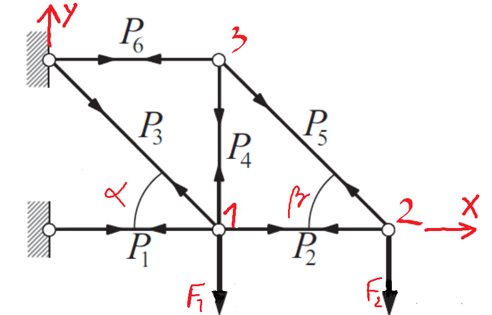
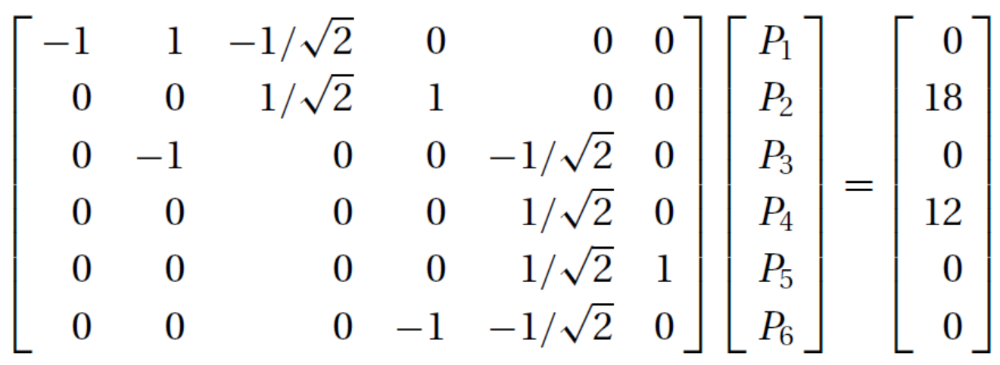
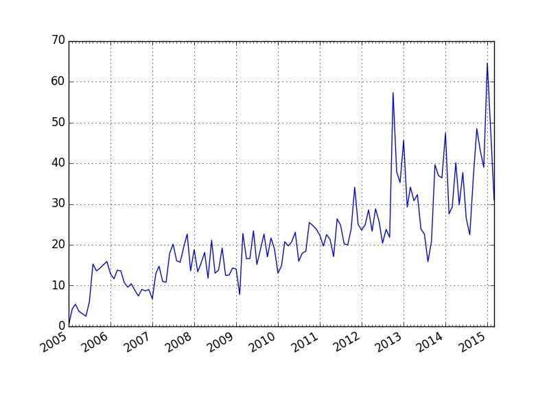

Sistemi linearnih enačb - nadaljevanje
Contents
Sistemi linearnih enačb - nadaljevanje#
Razcep LU#
Za rešitev sistema linearnih enačb zahteva Gaussov eliminacijski postopek najmanjše število računskih operacij.
V primeru, ko se matrika koeficientov \(\mathbf{A}\) ne spreminja in se spreminja zgolj vektor konstant \(\mathbf{b}\), se je mogoče izogniti ponovni Gaussovi eliminaciji matrike koeficientov. Z razcepom matrike \(\mathbf{A}\) lahko pridemo do rešitve z manj računskimi operacijami. V ta namen si bomo pogledali razcep LU!
Poljubno matriko lahko zapišemo kot produkt dveh matrik:
Pri tem je možnosti za zapis matrik \(\mathbf{B}\) in \(\mathbf{C}\) neskončno veliko.
Pri razcepu LU zahtevamo, da je matrika \(\mathbf{B}\) spodnje trikotna in matrika \(\mathbf{C}\) zgornje trikotna:
Vsaka od matrik \(\mathbf{L}\) in \(\mathbf{U}\) ima \((n+1)\,n/2\) neničelnih elementov; skupaj torej \(n^2+n\) neznank. Znana matrika \(\mathbf{A}\) definira \(n^2\) vrednosti. Za enolično določitev matrik \(\mathbf{L}\) in \(\mathbf{U}\) torej manjka \(n\) enačb. Tukaj bomo uporabili razcep LU, ki dodatne enačbe pridobi s pogojem \(L_{ii}=1\), \(i=0, 1,\dots,n-1\).
Sistem linearnih enačb:
torej zapišemo z razcepom matrike \(\mathbf{A}\):
Do rešitve sistema \(\mathbf{A}\mathbf{x}=\mathbf{b}\) sedaj pridemo tako, da rešimo dva trikotna sistema enačb.
Najprej izračunamo vektor \(\mathbf{y}\):
Ko je \(\mathbf{y}\) izračunan, lahko iz:
določimo \(\mathbf{x}\).
Razcep LU matrike koeficientov \(\mathbf{A}\)#
V nadaljevanju bomo pokazali, da Gaussova eliminacija dejanjsko predstavlja razcep LU matrike koeficientov \(\mathbf{A}\). Pri tem si bomo pomagali s simbolnim izračunom, zato uvozimo paket sympy:
import sympy as sym # uvozimo sympy
sym.init_printing() # za lep prikaz izrazov
Prikaz začnimo na primeru simbolno zapisanih matrik \(\mathbf{L}\) in \(\mathbf{U}\) dimenzije \(3\times 3\):
L21, L31, L32 = sym.symbols('L21, L31, L32')
U11, U12, U13, U22, U23, U33 = sym.symbols('U11, U12, U13, U22, U23, U33')
L = sym.Matrix([[ 1, 0, 0],
[L21, 1, 0],
[L31, L32, 1]])
U = sym.Matrix([[U11, U12, U13],
[ 0, U22, U23],
[ 0, 0, U33]])
Matrika koeficientov \(\mathbf{A}\) zapisana z elementi matrik \(\mathbf{L}\) in \(\mathbf{U}\) torej je:
A = L*U
A

Izvedimo sedaj Gaussovo eliminacijo nad matriko koeficientov \(\mathbf{A}\).
S pomočjo prve vrstice izvedemo Gaussovo eliminacijo v prvem stolpcu:
A[1,:] -= L21 * A[0,:]
A[2,:] -= L31 * A[0,:]
A

Nadaljujemo v drugem stolpcu:
A[2,:] -= L32 * A[1,:]
A

Iz zgornje eliminacije ugotovimo:
matrika \(\mathbf{U}\) je enaka matriki, ki jo dobimo, če izvedemo Gaussovo eliminacijo nad matriko koeficientov \(\mathbf{A}\).
izven diagonalni členi \(\mathbf{L}\) so faktorji, ki smo jih uporabili pri Gaussovi eliminaciji.
Numerična implementacija razcepa LU#
Numerično implementacijo si bomo pogledali na sistemu, ki je definiran kot:
import numpy as np
A = np.array([[8, -6, 3],
[-6, 6, -6],
[3, -6, 6]], dtype=float)
b = np.array([-14, 36, 6], dtype=float)
Izvedimo Gaussovo eliminacijo in koeficiente, s katerim množimo pivotno vrsto m, shranimo v matriko L na mesto z indeksi, kot jih ima v matriki \(\mathbf{A}\) eliminirani element.
(v, s) = A.shape # v=število vrstic, s=število stolpcev
U = A.copy() # pripravimo matriko U kot kopijo A
L = np.zeros_like(A) # pripravimo matriko L dimenzije enake A (vrednosti 0)
# eliminacija
for p, pivot_vrsta in enumerate(U[:-1]):
for i, vrsta in enumerate(U[p+1:]):
if pivot_vrsta[p]:
m = vrsta[p]/pivot_vrsta[p]
vrsta[p:] = vrsta[p:]-pivot_vrsta[p:]*m
L[p+1+i, p] = m
print('Korak: {:g}'.format(p))
print(U)
Korak: 0
[[ 8. -6. 3. ]
[ 0. 1.5 -3.75 ]
[ 0. -3.75 4.875]]
Korak: 1
[[ 8. -6. 3. ]
[ 0. 1.5 -3.75]
[ 0. 0. -4.5 ]]
L
array([[ 0. , 0. , 0. ],
[-0.75 , 0. , 0. ],
[ 0.375, -2.5 , 0. ]])
Dopolnimo diagonalo \(\mathbf{L}\):
for i in range(v):
L[i, i] = 1.
L
array([[ 1. , 0. , 0. ],
[-0.75 , 1. , 0. ],
[ 0.375, -2.5 , 1. ]])
Sedaj rešimo spodnje trikotni sistem enačb \(\mathbf{L}\,\mathbf{y}=\mathbf{b}\):
# direktno vstavljanje
y = np.zeros_like(b)
for i, b_ in enumerate(b):
y[i] = (b_ - np.dot(L[i, :i], y[:i]))
y
array([-14. , 25.5, 75. ])
Nadaljujemo z reševanjem zgornje trikotnega sistema \(\mathbf{U}\,\mathbf{x}=\mathbf{y}\):
U
array([[ 8. , -6. , 3. ],
[ 0. , 1.5 , -3.75],
[ 0. , 0. , -4.5 ]])
y
array([-14. , 25.5, 75. ])
# obratno vstavljanje
x = np.zeros_like(b)
for i in range(v-1, -1,-1):
x[i] = (y[i] - np.dot(U[i, i+1:], x[i+1:])) / U[i, i]
x
array([-14. , -24.66666667, -16.66666667])
Kakor smo navedli zgoraj, ob spremembi vektorja konstant \(\mathbf{b}\) ponovna Gaussova eliminacija ni potrebna. Izvesti je treba samo direktno in nato obratno vstavljanje. Poglejmo primer:
b = np.array([-1., 6., 7.])
y = np.zeros_like(b)
for i, b_ in enumerate(b):#direktno vstavljanje
y[i] = (b_ - np.dot(L[i, :i], y[:i]))
x = np.zeros_like(b)
for i in range(v-1, -1,-1):# obratno vstavljanje
x[i] = (y[i] - np.dot(U[i, i+1:], x[i+1:])) / U[i, i]
x
array([-4.33333333, -7.88888889, -4.55555556])
A.dot(x)
array([-1., 6., 7.])
Pivotiranje#
Poglejmo si spodnji sistem enačb:
A = np.array([[0, -6, 6],
[-6, 6, -6],
[8, -6, 3]], dtype=float) # poskusite tukaj izpustiti dtype=float in preveriet rezultat
b = np.array([6, 36, -14], dtype=float)
Če bi izvedli Gaussovo eliminacijo v prvem stolpcu matrike \(\mathbf{A}\):
A[1,:] - A[1,0]/A[0,0] * A[0,:]
C:\Users\janko\AppData\Local\Temp\ipykernel_26400\3999418912.py:1: RuntimeWarning: divide by zero encountered in double_scalars
A[1,:] - A[1,0]/A[0,0] * A[0,:]
C:\Users\janko\AppData\Local\Temp\ipykernel_26400\3999418912.py:1: RuntimeWarning: invalid value encountered in multiply
A[1,:] - A[1,0]/A[0,0] * A[0,:]
array([ nan, -inf, inf])
Opazimo, da imamo težavo z deljenjem z 0 v prvi vrstici. Elementarne operacije, ki jih nad sistemom lahko izvajamo, dovoljujejo zamenjavo poljubnih vrstic. Sistem lahko preuredimo tako, da pivotni element ni enak 0. Vseeno se lahko zgodi, da ima pivotni element, s katerim delimo, zelo majhno vrednost \(\varepsilon\). Ker bi to povečevalo zaokrožitveno napako, izmed vseh vrstic za pivotno vrstico izberemo tisto, katere pivot ima največjo absolutno vrednost.
Če med Gaussovo eliminacijo zamenjamo vrstice tako, da je pivotni element največji, to imenujemo pivotiranje vrstic ali tudi delno pivotiranje. Tako dosežemo, da je Gaussova eliminacija numerično stabilna.
Pokazati je mogoče, da pri reševanju sistema enačb \(\mathbf{A}\,\mathbf{x}=\mathbf{b}\), pri katerem je matrika \(\mathbf{A}\) diagonalno dominantna, pivotiranje po vrsticah ni potrebno. Reševanje je brez pivotiranja numerično stabilno.
Pravokotna matrika \(\mathbf{A}\) dimenzije \(n\) je diagonalno dominantna, če je absolutna vrednost diagonalnega elementa vsake vrstice večja od vsote absolutnih vrednosti ostalih elementov v vrstici:
Gaussova eliminacija z delnim pivotiranjem#
Pogledali si bomo Gaussovo eliminacijo z delnim pivotiranjem. Brez delnega pivotiranja v \(i\)-tem koraku eliminacije izberemo vrstico \(i\) za pivotiranje. Pri delnem pivotiranju pa najprej preverimo, ali je \(i\)-ti diagonalni element po absolutni vrednosti največji element v stolpcu \(i\) na ali pod diagonalo; če ni, zamenjamo vrstico \(i\) s tisto vrstico pod njo, v kateri je v stolpcu \(i\) po absolutni vrednosti največji element. Z delnim pivotiranjem zmanjšamo vpliv zaokrožitvene napake na rezultat.
V koliko bi izvedli polno pivotiranje, bi poleg zamenjave vrstic uporabili tudi zamenjavo vrstnega reda spremenljivk (zamenjava stolpcev). Polno pivotiranje izboljša stabilnost, se pa redko uporablja in ga tukaj ne bomo obravnavali.
Algoritem za Gaussovo eliminacijo z delnim pivotiranjem torej je:
def gaussova_eliminacija_pivotiranje(A, b, prikazi_korake=False):
""" Vrne Gaussovo eliminacijo razširjene matrike koeficientov,
uporabi delno pivotiranje.
:param A: matrika koeficientov
:param b: vektor konstant
:param prikazi_korake: ali izpišem posamezne korake
:return Ab: trapezna razširjena matrika koeficientov
"""
Ab = np.column_stack((A, b))
for p in range(len(Ab)-1):
p_max = np.argmax(np.abs(Ab[p:,p]))+p
if p != p_max:
Ab[[p], :], Ab[[p_max], :] = Ab[[p_max], :], Ab[[p], :]
pivot_vrsta = Ab[p, :]
for vrsta in Ab[p + 1:]:
if pivot_vrsta[p]:
vrsta[p:] -= pivot_vrsta[p:] * vrsta[p] / pivot_vrsta[p]
if prikazi_korake:
print('Korak: {:g}'.format(p))
print('Pivot vrsta:', pivot_vrsta)
print(Ab)
return Ab
A
array([[ 0., -6., 6.],
[-6., 6., -6.],
[ 8., -6., 3.]])
Ab = gaussova_eliminacija_pivotiranje(A, b, prikazi_korake=True)
Korak: 0
Pivot vrsta: [ 8. -6. 3. -14.]
[[ 8. -6. 3. -14. ]
[ 0. 1.5 -3.75 25.5 ]
[ 0. -6. 6. 6. ]]
Korak: 1
Pivot vrsta: [ 0. -6. 6. 6.]
[[ 8. -6. 3. -14. ]
[ 0. -6. 6. 6. ]
[ 0. 0. -2.25 27. ]]
Razcep LU z delnim pivotiranjem#
Podobno kakor pri Gaussovi eliminaciji lahko tudi razcep LU razširimo z delnim pivotiranjem. Reševanje tako postane numerično stabilno. Pri tem moramo shraniti informacijo o zamenjavi vrstic, ki jo potem posredujemo v funkcijo za rešitev ustreznih trikotnih sistemov.
def LU_razcep_pivotiranje(A, prikazi_korake=False):
""" Vrne razcep LU matriko in vektor zamenjanih vrstic pivotiranje,
uporabi delno pivotiranje.
:param A: matrika koeficientov
:param prikazi_korake: izpišem posamezne korake
:return LU: LU matrika
:return pivotiranje: vektor zamenjave vrstic (pomembno pri iskanju rešitve)
"""
LU = A.copy()
pivotiranje = np.arange(len(A))
for p in range(len(LU)-1):
p_max = np.argmax(np.abs(LU[p:,p]))+p
if p != p_max:
LU[[p], :], LU[[p_max], :] = LU[[p_max], :], LU[[p], :]
pivotiranje[p], pivotiranje[p_max] = pivotiranje[p_max], pivotiranje[p]
pivot_vrsta = LU[p, :]
for vrsta in LU[p + 1:]:
if pivot_vrsta[p]:
m = vrsta[p] / pivot_vrsta[p]
vrsta[p:] -= pivot_vrsta[p:] * m
vrsta[p] = m
else:
raise Exception('Deljenje z 0.')
if prikazi_korake:
print('Korak: {:g}'.format(p))
print('Pivot vrsta:', pivot_vrsta)
print(LU)
return LU, pivotiranje
Poglejmo si primer:
A = np.array([[0, -6, 6],
[-6, 6, -6],
[8, -6, 3]], dtype=float)
b = np.array([-14, 36, 6], dtype=float)
lu, piv = LU_razcep_pivotiranje(A, prikazi_korake=True)
Korak: 0
Pivot vrsta: [ 8. -6. 3.]
[[ 8. -6. 3. ]
[-0.75 1.5 -3.75]
[ 0. -6. 6. ]]
Korak: 1
Pivot vrsta: [ 0. -6. 6.]
[[ 8. -6. 3. ]
[ 0. -6. 6. ]
[-0.75 -0.25 -2.25]]
V zgornjem primeru smo uporabili kompaketen način zapisa trikotnih matrik \(\mathbf{L}\) in \(\mathbf{U}\); vsaka je namreč definirana s 6 elementi, pri matriki \(\mathbf{L}\) pa vemo, da so diagonalni elementi enaki 1. Matrika lu tako vsebuje \(3\times3=9\) elementov:
lu
array([[ 8. , -6. , 3. ],
[ 0. , -6. , 6. ],
[-0.75, -0.25, -2.25]])
Na diagonali in nad diagonalo so vrednosti zgornje trikotne matrike \(\mathbf{U}\), pod diagonalo pa so poddiagonalni elementi matrike \(\mathbf{L}\). Pri izračunu rešitve bomo upoštevali, da so diagonalne vrednosti \(\mathbf{L}\) enake 1.
Numerični seznam piv nam pove, kako so bile zamenjane vrstice, kar je treba upoštevati pri izračunu rešitve:
piv
array([2, 0, 1])
Določimo sedaj še rešitev (koda za računanje rešitve je v modulu orodja.py)
from moduli import orodja
r = orodja.LU_resitev_pivotiranje(lu, b, piv)
r
array([ -3.66666667, -14.11111111, -16.44444444])
Preverjanje rešitve:
A@r
array([-14., 36., 6.])
Modul SciPy#
Modul SciPy temelji na numpy modulu in vsebuje veliko različnih visokonivojskih programov/modulov/funkcij. Teoretično ozadje modulov so seveda različni numerični algoritmi; nekatere spoznamo tudi v okviru tega učbenika. Dober vir teh numeričnih algoritmov v povezavi s SciPy predstavlja dokumentacija. Za odličen uvod v SciPy si lahko ogledate YouTube posnetek: SciPy Tutorial (2021): For Physicists, Engineers, and Mathematicians: For Physicists, Engineers, and Mathematicians
Kratek pregled hierarhije modula:
Linearna algebra (scipy.linalg)
Integracija (scipy.integrate)
Optimizacija (scipy.optimize)
Interpolacija (scipy.interpolate)
Fourierjeva transformacija (scipy.fftpack)
Problem lastnih vrednosti (redke matrike) (scipy.sparse)
Statistika (scipy.stats)
Procesiranje signalov (scipy.signal)
Posebne funkcije (scipy.special)
Večdimenzijsko procesiranje slik (scipy.ndimage)
Delo z datotekami (scipy.io)
V sledečih predavanjih si bomo nekatere podmodule podrobneje pogledali.
Poglejmo si, kako je znotraj SciPy implementiran razcep LU:
from scipy.linalg import lu_factor, lu_solve
---------------------------------------------------------------------------
KeyboardInterrupt Traceback (most recent call last)
Input In [31], in <cell line: 1>()
----> 1 from scipy.linalg import lu_factor, lu_solve
File ~\AppData\Local\Programs\Python\Python310\lib\site-packages\scipy\linalg\__init__.py:216, in <module>
214 from ._procrustes import *
215 from ._decomp_update import *
--> 216 from ._sketches import *
217 from ._decomp_cossin import *
219 # Deprecated namespaces, to be removed in v2.0.0
File ~\AppData\Local\Programs\Python\Python310\lib\site-packages\scipy\linalg\_sketches.py:9, in <module>
6 import numpy as np
8 from scipy._lib._util import check_random_state, rng_integers
----> 9 from scipy.sparse import csc_matrix
11 __all__ = ['clarkson_woodruff_transform']
14 def cwt_matrix(n_rows, n_columns, seed=None):
File ~\AppData\Local\Programs\Python\Python310\lib\site-packages\scipy\sparse\__init__.py:283, in <module>
278 from ._arrays import (
279 csr_array, csc_array, lil_array, dok_array, coo_array, dia_array, bsr_array
280 )
282 # For backward compatibility with v0.19.
--> 283 from . import csgraph
285 # Deprecated namespaces, to be removed in v2.0.0
286 from . import (
287 base, bsr, compressed, construct, coo, csc, csr, data, dia, dok, extract,
288 lil, sparsetools, sputils
289 )
File ~\AppData\Local\Programs\Python\Python310\lib\site-packages\scipy\sparse\csgraph\__init__.py:187, in <module>
182 from ._laplacian import laplacian
183 from ._shortest_path import (
184 shortest_path, floyd_warshall, dijkstra, bellman_ford, johnson,
185 NegativeCycleError
186 )
--> 187 from ._traversal import (
188 breadth_first_order, depth_first_order, breadth_first_tree,
189 depth_first_tree, connected_components
190 )
191 from ._min_spanning_tree import minimum_spanning_tree
192 from ._flow import maximum_flow
File <frozen importlib._bootstrap>:404, in parent(self)
KeyboardInterrupt:
Funkcija scipy.linalg.lu_factor (dokumentacija):
lu_factor(a, overwrite_a=False, check_finite=True)
zahteva vnos matrike koeficientov (ali seznama matrik koeficientov) a, overwrite_a v primeru True z rezultatom razcepa prepiše vrednost a (to je lahko pomembno, da se prihrani spomin in poveča hitrost). Funkcija lu_factor vrne terko (lu, piv):
lu- \(\mathbf{L}\) \ \(\mathbf{U}\) matrika (matrika, ki je enake dimenzije kota, vendar pod diagonalo vsebuje elemente \(\mathbf{L}\), preostali elementi pa definirajo \(\mathbf{U}\); diagonalni elementi \(\mathbf{L}\) imajo vrednosti 1.piv- pivotni indeksi, predstavljajo permutacijsko matrikoP: vrstaimatrikeaje bila zamenjana z vrstopiv[i](v vsakem koraku se upošteva predhodno stanje, malo drugačna logika kot v naši funkcijiLU_razcep_pivotiranje).
lu_factor uporabljamo v paru s funkcijo scipy.linalg.lu_solve (dokumentacija), ki nam poda rešitev sistema:
lu_solve(lu_and_piv, b, trans=0, overwrite_b=False, check_finite=True)
lu_and_piv je terka rezultata (lu, piv) iz lu_factor, b je vektor (ali seznam vektorjev) konstant. Ostali parametri so opcijski.
Poglejmo si uporabo:
A = np.array([[0, -6, 6],
[-6, 6, -6],
[8, -6, 3]], dtype=float)
b = np.array([-14, 36, 6], dtype=float)
lu, piv = lu_factor(A)
lu
array([[ 8. , -6. , 3. ],
[ 0. , -6. , 6. ],
[-0.75, -0.25, -2.25]])
piv
array([2, 2, 2], dtype=int32)
Pridobimo rešitev:
r = lu_solve((lu, piv), b)
r
array([ -3.66666667, -14.11111111, -16.44444444])
Preverimo ustreznost rešitve:
A@r
array([-14., 36., 6.])
Računanje inverzne matrike#
Inverzno matriko h kvadratni matriki \(\textbf{A}\) reda \(n\times n\) označimo z \(\textbf{A}^{-1}\). Je matrika reda \(n\times n\), takšna, da velja
kjer je \(\mathbf{I}\) enotska matrika.
Najbolj učinkovit način za izračun inverzne matrike od matrike \(\mathbf{A}\) je rešitev matrične enačbe:
Matrika \(\mathbf{X}\) je inverzna matriki \(\mathbf{A}\): \(\mathbf{A}^{-1}=\mathbf{X}\).
Izračun inverzne matrike je torej enak reševanju \(n\) sistemov \(n\) linarnih enačb:
kjer je \(\mathbf{b}_i\) \(i\)-ti stolpec matrike \(\mathbf{B}=\mathbf{I}\).
Numerična zahtevnost: izvedemo razcep LU nad matriko \(\mathbf{A}\) (računski obseg reda \(n^3\)) in nato poiščemo rešitev za vsak \(\mathbf{x}_i\) (\(2\,n^2\) računskih operacij za vsak \(i\)). Skupni računski obseg je torej še vedno reda \(n^3\). (Če bi \(n\) krat izvajali Gaussovo eliminacijo, bi bil obseg reda \(n^4\).)
lu_piv = lu_factor(A)
lu_piv
(array([[ 8. , -6. , 3. ],
[ 0. , -6. , 6. ],
[-0.75, -0.25, -2.25]]),
array([2, 2, 2], dtype=int32))
Tukaj se sedaj pokaže smisel razcepa LU; razcep namreč izračunamo samo enkrat in potem za vsak vektor konstant poiščemo rešitev tako, da rešimo dva trikotna sistema. Če bi sisteme reševali po Gaussovi metodi, bi rabili \((n^3+n^2)\,n\) računskih operacij.
Izračunajmo inverzno matriko od matrike \(\textbf{A}\). Najprej z uporabo np.identity() pripravimo enotsko matriko:
np.identity(len(A))
array([[1., 0., 0.],
[0., 1., 0.],
[0., 0., 1.]])
Nato rešimo sistem enačb za vsak stolpec enotske matrike:
A_inv = np.zeros_like(A) #zeros_like vrne matriko oblike in tipa matrike A z vrednostmi 0
for b, a_inv in zip(np.identity(len(A)), A_inv):
a_inv[:] = lu_solve(lu_piv, b)
A_inv = A_inv.T
Rešitev torej je:
A_inv
array([[-0.16666667, -0.16666667, 0. ],
[-0.27777778, -0.44444444, -0.33333333],
[-0.11111111, -0.44444444, -0.33333333]])
Preverimo rešitev:
A@A_inv
array([[ 1.00000000e+00, 0.00000000e+00, 1.11022302e-16],
[ 2.22044605e-16, 1.00000000e+00, -1.11022302e-16],
[-1.66533454e-16, 0.00000000e+00, 1.00000000e+00]])
Rešitev z uporabo Numpy:
#%%timeit
np.linalg.inv(A)
array([[-0.16666667, -0.16666667, 0. ],
[-0.27777778, -0.44444444, -0.33333333],
[-0.11111111, -0.44444444, -0.33333333]])
Z ustrezno uporabo funkcij iz modula SciPy lahko do rešitve pridemo še hitreje. V funkcijo lu_solve lahko vstavimo vektor \(\mathbf{b}\) ali matriko \(\mathbf{B}\), katere posamezni stolpec \(i\) predstavlja nov vektor konstant \(\mathbf{b}_i\).
#%%timeit
lu_solve(lu_piv, np.identity(len(A)))
array([[-0.16666667, -0.16666667, 0. ],
[-0.27777778, -0.44444444, -0.33333333],
[-0.11111111, -0.44444444, -0.33333333]])
Reševanje predoločenih sistemov#
from IPython.display import YouTubeVideo
YouTubeVideo('N6upu99LbfQ', width=800, height=300)
Kadar rešujemo sistem \(m\) linearnih enačbami z \(n\) neznankami ter velja \(m>n\) in je rang \(n+1\), imamo predoločeni sistem.
Predoločeni (tudi nekonsistenten sistem):
nima rešitve. Lahko pa poiščemo najboljši približek rešitve z metodo najmanjših kvadratov .
Vsota kvadratov preostankov je definirana s skalarnim produktom:
kar preoblikujemo v:
kjer smo upoštevali, da zaradi skalarne vrednosti velja: \(\mathbf{b}^T\mathbf{A}\mathbf{x}=(\mathbf{b}^T(\mathbf{A}\mathbf{x}))^T=(\mathbf{A}\mathbf{x})^T\mathbf{b}\).
Rešitev enačbe, gradient vsote kvadratov, določa njen minimum:
Tako iz normalne enačbe:
določimo najboljši približek rešitve:
Z vpeljavo psevdo inverzne matrike:
k matriki \(\mathbf{A}\) je rešitev predoločenega sistema zapisana:
Zgoraj predstavljen postopek je relativo enostaven, je pa numerično zahteven in lahko v nekaterih primerih slabo pogojen; priporočeno je da v praksi psevdo inverzno matriko izračunamo z uporabo funkcij:
numpy.linalg.pinviz modulanumpy(dokumentacija),Funkcij
pinv,pinv2alipinvhiz modulascipy.linalg(izbira je odvisna od obravnavanega problema; glejte dokumentacijo),
ki temeljijo na boljših numerični metodah.
Primer sistema z enolično rešitvijo:
# število enačb enako številu neznank
A = np.array([[1., 2],
[2, 3]])
b = np.array([5., 8])
np.linalg.solve(A, b)
array([1., 2.])
Naredimo sedaj predoločeni sistem (funkcija numpy.vstack (dokumentacija) sestavi sezname po stolpcih, numpy.random.seed (dokumentacija) ponastavi generator naključnih števil na vrednost semena seed, numpy.random.normal (dokumentacija) pa generira normalno porazdeljeni seznam dolžine size in standardne deviacije scale):
vA = np.vstack([A,A,A])
np.random.seed(seed=0)
vA += np.random.normal(scale=0.01, size=vA.shape) # pokvarimo rešitev -> sistem je predoločen
vA # matrika koeficientov
array([[1.01764052, 2.00400157],
[2.00978738, 3.02240893],
[1.01867558, 1.99022722],
[2.00950088, 2.99848643],
[0.99896781, 2.00410599],
[2.00144044, 3.01454274]])
vb = np.hstack([b,b,b])
vb += np.random.normal(scale=0.01, size=vb.shape)
vb # vektor konstant
array([5.00761038, 8.00121675, 5.00443863, 8.00333674, 5.01494079,
7.99794842])
Rešimo sedaj predoločen sistem:
Ap = np.linalg.pinv(vA)
Ap.dot(vb)
array([0.94512271, 2.02675939])
Vidimo, da predoločeni sistem z naključnimi vrednostmi (simulacija šuma pri meritvi) poda podoben rezultat kakor rešitev brez šuma. V kolikor bi nivo šuma povečevali, bi se odstopanje od enolične rešitve povečevalo.
Psevdo inverzno matriko lahko določimo tudi sami in preverimo razliko z vgrajeno funkcijo:
#%%timeit # preverite hitrost!
Ap2 = np.linalg.inv(vA.T@vA) @ vA.T
Ap2 - Ap
array([[-4.44089210e-16, 2.77555756e-15, 0.00000000e+00,
3.33066907e-15, -1.11022302e-15, 2.77555756e-15],
[ 9.99200722e-16, -6.66133815e-16, 6.66133815e-16,
-6.66133815e-16, 1.11022302e-15, -1.11022302e-15]])
Iterativne metode#
Pogosto se srečamo z velikimi sistemi linearnih enačb, katerih matrika koeficientov ima malo od nič različnih elementov (take matrike imenujemo redke ali tudi razpršene, angl. sparse).
Pri reševanju takih sistemov linearnih enačb se zelo dobro izkažejo iterativne metode; prednosti v primerjavi z direktnimi metodami so:
računske operacije se izvajajo samo nad neničelnimi elementi (kljub iterativnemu reševanju jih je lahko manj)
zahtevani spominski prostor je lahko neprimerno manjši.
Gauss-Seidlova metoda#
V nadaljevanju si bomo pogledali idejo Gauss-Seidelove iterativne metode. Najprej sistem enačb \(\mathbf{A}\,\mathbf{x}=\mathbf{b}\) zapišemo kot:
Predpostavim, da smo v \(k-1\) koraku iterativne metode in so znani približki \(x_{j}^{(k-1)}\) (\(j=0,1,\dots, n-1\)). Iz zgornje vsote izpostavimo člen \(i\):
Ker približki \(x_{j}^{(k-1)}\) ne izpolnjujejo natančno linearnega problema, lahko iz zgornje enačbe določimo nov približek \(x_{i}^{(k)}\):
Vsoto smo razdelili na dva dela in za izračun \(i\)-tega člena upoštevali v \(k\)-ti iteraciji že določene člene z indeksom manjšim od \(i\).
Iterativni pristop prekinemo, ko dosežemo želeno natančnost rešitve \(\epsilon\):
Zgled#
A = np.array([[8, -1, 1],
[-1, 6, -1],
[0, -1, 6]], dtype=float)
b = np.array([-14, 36, 6], dtype=float)
Začetni približek:
x = np.zeros(len(A))
x
array([0., 0., 0.])
Pripravimo matriko \(\mathbf{A}\) brez diagonalnih elementov (Zakaj? Poskusite odgovoriti spodaj, ko bomo izvedli iteracije.)
K = A.copy() #naredimo kopijo, da ne povozimo podatkov
np.fill_diagonal(K, np.zeros(3)) #spremenimo samo diagonalne elemente
K
array([[ 0., -1., 1.],
[-1., 0., -1.],
[ 0., -1., 0.]])
Izvedemo iteracije:
(Ker bomo vrednosti takoj zapisali v x, ni treba razbiti vsote na dva dela)
for k in range(3):
xk_1 = x.copy()
print(5*'-' + f'iteracja {k}' + 5*'-')
for i in range(len(A)): #opazujte kaj se dogaja, ko to celico poženete večkrat!
x[i] = (b[i]-K[i,:].dot(x))/A[i,i]
print(f'Približek za element {i}', x)
e = np.linalg.norm(x-xk_1)
print(f'Norma {e}')
-----iteracja 0-----
Približek za element 0 [-1.75 0. 0. ]
Približek za element 1 [-1.75 5.70833333 0. ]
Približek za element 2 [-1.75 5.70833333 1.95138889]
Norma 6.281360365408393
-----iteracja 1-----
Približek za element 0 [-1.28038194 5.70833333 1.95138889]
Približek za element 1 [-1.28038194 6.11183449 1.95138889]
Približek za element 2 [-1.28038194 6.11183449 2.01863908]
Norma 0.6227976321231091
-----iteracja 2-----
Približek za element 0 [-1.23835057 6.11183449 2.01863908]
Približek za element 1 [-1.23835057 6.13004808 2.01863908]
Približek za element 2 [-1.23835057 6.13004808 2.02167468]
Norma 0.04590845211691733
Preverimo rešitev
A@x
array([-14.01517799, 35.9969644 , 6. ])
Metoda deluje dobro, če je matrika diagonalno dominantna (obstajajo pa metode, ki delujejo tudi, ko matrika ni diagonalno dominantna, glejte npr.: J. Petrišič, Reševanje enačb, 1996, str 149: Metoda konjugiranih gradientov).
Nekaj vprašanj za razmislek!#
Na sliki je prikazano paličje. Ob delovanju sil \(F_1\) in \(F_2\) se v palicah razvijejo notranje sile \(P_i\). Dimenzije paličja zagotavljata kota \(\alpha\) in \(\beta\).  Sile v palicah izračunamo s pomočjo sistema linearnih enačb.
V simbolni obliki zapišite ravnotežje sil za točko 1 v \(x\) in \(y\) smeri (namig: naloga je posplošitev naloge 15 na strani 81 v knjigi Numerical methods in Eng with Py 3 z nastavkom za rešitev):  Zgornji nastavek ima napako v predzadnji vrstici. Rešitev sistema v knjigi je: \(P_{1} = -42000, P_{2}=-12000, P_{3}= 42426, P_{4} = -12000, P_{5} = 16971, P_{6} = 12000\) ).
V simbolni obliki zapišite ravnotežje sil za točko 2 v \(x\) in \(y\) smeri.
Najdite simbolno rešitev za sile \(P_i\).
Uporabite podatke: \(\alpha=\beta=\pi/4\), \(F_1=18\) kN in \(F_2=12\) kN ter najdite številčno rešitev.
Pripravite si funkcijo, ki bo za poljubne podatke (npr:
podatki = {a: pi/4, b: pi/4, F1: 18000, F2: 12000}) vrnila numerično matriko koeficientov \(\mathbf{A}\) in vektor konstant \(\mathbf{b}\). Če ne uspete tega narediti avtomatizirano, delajte “na roke” (splača se vam potruditi, saj bomo to večkrat rabili).Razširite zgornjo funkcijo, da vam vrne rešitev linearnega sistema (uporabite kar
numpyknjižnico)Predpostavite \(F_1=F_2=10\) kN. V vsaj petih vrednostih kota \(\alpha=\beta\) od 10\(^{\circ}\) do 80\(^{\circ}\) izračunajte sile v palicah.
Za primer iz predhodne naloge narišite sile v palicah.
S pomočjo funkcije
np.linalg.solveizračunajte inverz poljubne matrikeA(nato izračunajte še inverz s pomočjo funkcijenp.linalg.inv).Na primeru poljubnih podatkov (npr:
podatki = {a: pi/4, b: pi/4, F1: 18000, F2: 12000}) pokažite Gaussovo eliminacijo z delnim pivotiranjem.Na primeru poljubnih podatkov (npr:
podatki = {a: pi/4, b: pi/4, F1: 18000, F2: 12000}) pokažite Gauss-Seidlov iterativni pristop k iskanju rešitve.
Dodatno#
Analizirajte, koliko e-mailov dobite na dan:

https://plot.ly/ipython-notebooks/graph-gmail-inbox-data/
(Nasvet: sledite kodi in uporabite matplotlib za prikaz).